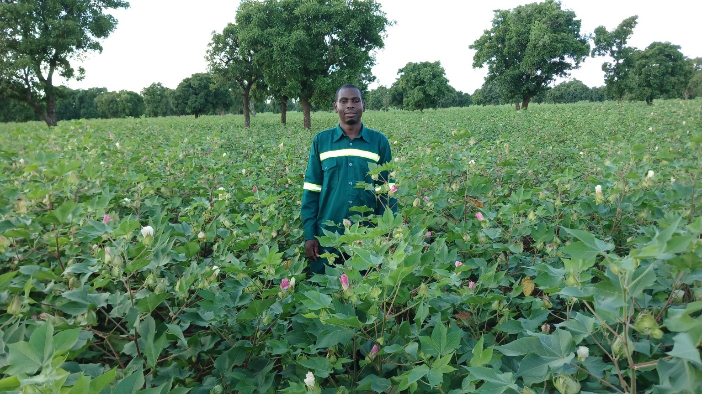

01
Ingénierie agricole & secteur public
Expérience dans les services techniques agricoles, la planification, le suivi des activités, l’appui aux producteurs et la coordination des interventions au niveau territorial et central.
Ingénierie Agricole BF accompagne les projets, institutions, collectivités, organisations paysannes et partenaires dans la conception, la mise en œuvre et le suivi d’interventions agricoles et rurales.

Ingénierie Agricole BF est une plateforme professionnelle dédiée à l’agriculture, au développement rural et à la résilience des communautés. Elle met à disposition une expertise technique et opérationnelle pour concevoir, planifier, accompagner, suivre et évaluer les interventions agricoles.
Une expérience de plus de 15 ans dans le développement rural, l’agriculture, les aménagements hydro-agricoles, les systèmes semenciers, la résilience, la gestion de projets et le suivi-évaluation.
Contribuer à une agriculture productive, résiliente et durable, capable d’améliorer les conditions de vie des populations rurales et de renforcer la sécurité alimentaire.
Un parcours associant service public, projets de développement, action humanitaire, expertise agricole et accompagnement des communautés.
Expérience dans les services techniques agricoles, la planification, le suivi des activités, l’appui aux producteurs et la coordination des interventions au niveau territorial et central.
Responsabilités de coordination, de management d’équipe, de planification et de suivi de la mise en œuvre des activités agricoles et de développement rural.
Interventions avec des organisations et partenaires tels que PanAfricare, PAM, AMR, IRC et d’autres acteurs sur la résilience, la sécurité alimentaire, les moyens d’existence, la mobilisation communautaire et le suivi-évaluation.
Production, inspection, contrôle de qualité, accompagnement des producteurs, formation et appui au fonctionnement des systèmes semenciers.
Diagnostics des acteurs, dispositifs de coordination, gouvernance, risques, mécanismes de gestion des conflits, conformité réglementaire et formulation de recommandations pour les filières agricoles.
Production végétale, itinéraires techniques, fertilité des sols et agriculture résiliente.
Production, contrôle, inspection, qualité et renforcement des capacités des acteurs semenciers.
Bas-fonds, périmètres irrigués, CES/DRS, gestion de l’eau et restauration des terres.
Sécurité alimentaire, moyens d’existence, AGR, autonomisation et développement local.
Baseline, indicateurs, collecte numérique, analyse des données et tableaux de bord.
Mobilisation communautaire, CEFE, AVEC, entrepreneuriat et renforcement des capacités.
Récupération des terres, compostage, jardins, appui communautaire et moyens d’existence.
Cartographie des acteurs, mécanismes de coordination, risques, SWOT et recommandations.
Accompagnement des producteurs, inspection des parcelles, contrôle qualité et formation.
Cette rubrique rassemble les études, diagnostics, analyses de filières, rapports techniques et productions professionnelles réalisés ou accompagnés dans le domaine agricole et rural.
Analyse des acteurs, dispositifs de coordination, mécanismes de décision, risques, conflits, conformité réglementaire et recommandations.
Typologie des acteurs, fonctionnement des marchés, contraintes, mécanismes de gouvernance et pistes d’amélioration.
Travaux et analyses portant sur la production semencière, l’inspection, la qualité, l’accompagnement des producteurs et la réglementation.
Collecte numérique, contrôle qualité, indicateurs, analyse descriptive et production de rapports pour les projets agricoles et de résilience.
Diagnostics communautaires, vulnérabilité, activités génératrices de revenus, agriculture, élevage et renforcement des capacités.
CES/DRS, récupération des terres, bas-fonds, gestion de l’eau agricole et solutions adaptées aux communautés rurales.
Texte de référence sur les orientations du développement durable du secteur rural, les rôles des acteurs, la gouvernance, la participation, les organisations professionnelles et la coordination des interventions.
Consulter la loiAnalyse des acteurs, mécanismes de gouvernance, coordination, inclusion, risques et ruptures dans la filière sorgho du Yaadga.
Télécharger le rapportLes rapports PDF, études Word, présentations et autres documents pourront être ajoutés ici progressivement, avec un classement par thème, filière, territoire et année.
Pour une étude, une mission d’expertise, une formation ou un accompagnement technique, contactez Ingénierie Agricole BF.